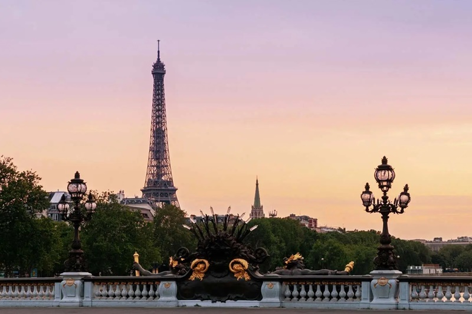
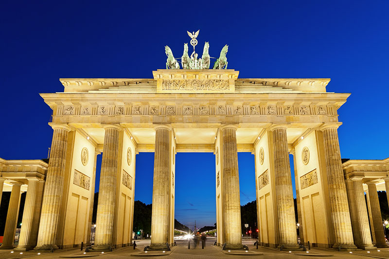
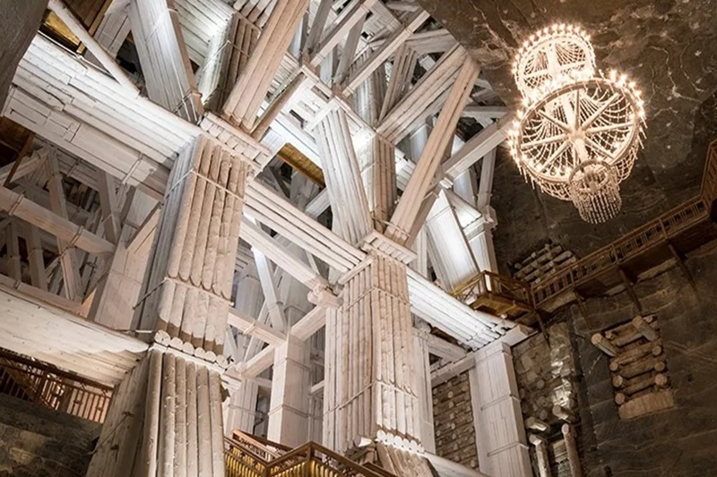

França: Torre Eiffel em Paris
A Torre Eiffel é uma estrutura de ferro de 324 metros de altura que oferece vistas panorâmicas deslumbrantes de Paris a partir de seus mirantes.Localmente apelidada de "Dama de Ferro" (em francês: La dame de fer), foi construída de 1887 a 1889 como a peça central da Exposição Universal de 1889 e foi inicialmente criticada por alguns dos principais artistas e intelectuais franceses por seu design, mas tornou-se um ícone cultural global da França e uma das estruturas mais reconhecidas do mundo.
| Arquiteto | Stephen Sauvestre |
|---|---|
| Engenheiro | Gustave Eiffel |
| Altura | 330 metros |
Portugal: Torre de Belém em Lisboa
A Torre de Belém fica em Lisboa e é considerada o principal ponto turístico de Portugal e um dos mais visitados da Europa. A Torre de Belém em Lisboa foi construída na era de ouro de Portugal, época das navegações, com o objetivo de proteger a cidade de invasores. O local, ao longo dos anos, acabou sendo serventia para diversas funções governamentais como prisão, aduaneira, telégrafo e até mesmo farol. Em 1983, recebeu o título de Patrimônio da Humanidade pela UNESCO e hoje, é um dos pontos turísticos mais visitados de Lisboa e de Portugal.

Alemanha: Portão de Brandemburgo em Berlim
Hoje sinônimo de paz e unidade, o Portão de Brandemburgo já foi símbolo de divisão entre a Alemanha Oriental e a Ocidental, durante a Guerra Fria. O monumento de 26 metros de altura, construído entre 1788 e 1791, teve como inspiração arquitetônica a entrada da Acrópole de Atenas. Foi idealizado pelo rei Friedrich Wilhelm II, da Prússia, e planejado por Carl Gotthard Langhans para celebrar o triunfo na guerra pelos prussianos.
Polônia: Mina de Sal de Wieliczka
Patrimônio Mundial da Unesco e uma das empresas em operação mais antigas do mundo, a Mina de Sal de Wieliczka, cidade nos arredores de Cracóvia, é também uma das atrações mais procuradas da Polônia. Ainda hoje o sal é extraído do local, aberto no século XIII. É possível visitar dois dos 350 km de passagens e câmaras subterrâneas que vão a até 135 metros por baixo da terra e contêm lagos e capelas com esculturas e luminárias feitos com sal. Nas câmaras maiores são realizados concertos, peças de teatro e outros eventos.
